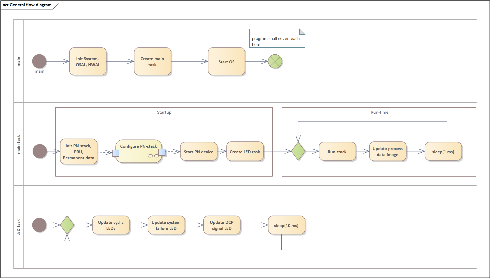

Program Flow

Program Main Routine
Program Initialization
- The Program Main Routine at first is Initializing the Operating System in #System_init(), as well as the required Hardware Interface Drivers in #Board_Init().
- Next The KUNBUS Abstraction Layers are being initialized.
Stack Initialization
The Stack Initialization is done within #App_taskStackMain()
APP_stackInit
-# APP_HW_BOARD_INFO_read
-# APPL_UI_getMacAddr
-# PRU_PN_loadPru
Stack Configuration
APP_configureStack
-# APPL_initPermStorage
-# PN_API_PDEV_init
-#
-# APP_config_Pdev
-# Readback Serial Number, Hardware Revision, Software Revision
-# apply vendor and device id
-# apply chassisId
-# apply configuration
-# APP_configEth
-# APPL_getPermStorage
-# DcpData provided to permanent Data
-# register callbacks within configuration
-# PN_API_ETH_applyConfiguration (&configuration)
-# APP_configSnmp
-# Setup Interface and Port Description Port 1 & 2
-# PN_API_SNMP_applyConfiguration
-# APP_configDev
-# PN_API_DEV_setOutputDataBuffer
-# PN_API_DEV_setInputDataBuffer
-# APP_configureSubmodules
-# PN_API_DEV_registerModuleSubstitutes - DAP
-# PN_API_DEV_registerModuleSubstitutes - Default Module
-# PN_API_DEV_registerModuleSubstitutes - Default SubModule
-# Plug Module & Submodules Slot 0 DAP Slot 1 - 9 Input Slot 10 - 18 Output
-# APP_configureImData
-# PN_API_DEV_registerWriteRecordIndicatedCallback
-# PN_API_DEV_applyEquipmentConfiguration
-# PN_API_PDEV_start
-# #PN_API_PDEV_APP_start
-# #PN_API_ETH_APP_start
-# #PN_API_IP_APP_start
-# #PN_API_SNMP_APP_start
-# #PN_API_DEV_APP_start
-# APP_pruStart
- The application configures the Slots, Subslots, possibly plugged Modules and Submodules (Substitutes).
- Next the application plugs existing Modules and Submodules.
- This example application is configuring a PROFINET device having 19 Slots.
- Into Slot 0 the application plugs the Device Access Point Module.
- This Module is getting 4 Submodules plugged.
- This Module is used to identify the device and does not have any cyclic Input or Output Process Data mapped.
- In Slots 1 to 18 there are Modules and Submodules plugged reflecting cyclic Process Data.
- Within those Slots there are Modules plugged having one Submodule each.
- Slot 1 to 9 Input Data Modules and Submodules are plugged.
- Submodules plugged in Slot 1 and 2 reflect 16 Byte Input Data each
- Submodules plugged in Slot 3 to 6 reflect 32 Byte Input Data each
- Submodules plugged in Slot 7 to 9 reflect 64 Byte Input Data each
- Slot 10 to 18 Output Data Modules and Submodules are plugged.
- Submodules plugged in Slot 10 and 11 reflect 16 Byte Input Data each
- Submodules plugged in Slot 12 to 15 reflect 32 Byte Input Data each
- Submodules plugged in Slot 16 to 18 reflect 64 Byte Input Data each
- Plugging a Module/Submodule always follows the same routine
- The Module Descriptor content is erase to avoid dirt effects
- The Module Descriptor is filled with
- an Application Process Identifier (API)
- a Module Identifier (ID)
- a Module Type
- its' possible substitutes
- the Module is plugged
- The Generation of a Submodule follows the Module Generation and Plugging
- The Submodule Descriptor is filled with
- Application Process Identifier
- Submodule Identifier
- Submodule Type
- Process Data Parameter, like input data length and offset within the Input Data Buffer, output data length and offset within the Output Data Buffer
- its' possible substitutes
- The Submodule is plugged
- When Submodules are plugged, one can assign I&M Data to those
- Our Stack support so called I&M Carriers
- Within the I&M Carrier the I&M Data supported is specified,
- the Application Process Identifier, Slot and Subslot, Device and Module Representative assignment is done - this data is provided by I&M Carrier Descriptor
- the I&M Carrier Framework currently supports I&M Data of I&M0 to I&M4
Stack Status LEDs
APP_startLedTask
Next the application itself will be executed - this is the time when the device setup is completed and the application can be flagged ready for application relation establishment.
Stack and Example Application Execution
In #APPL_runStack there are two actions performed, the stack execution and the example application code.
- The stack is periodically triggered by PN_API_PDEV_run.
- Next the current Output Data Buffer and the latest Input Data Buffer sent is read back from the stack. The Output Data Buffer is read back by calling PN_API_DEV_getBufferOutputData. The Input Data Buffer is read back by calling PN_API_DEV_getBufferInputData.
- The example application within the PROFINET example project is mapping/mirroring Byte 0 of Output Data Buffer onto Byte 0 of Input Data Buffer. Additionally, an unsigned 8bit integer counter is incremented and written to Byte 1 of Input Data Buffer.
- After the example application code is executed the updated Input Data Buffer is released by PN_API_DEV_releaseBufferInputData.
Cyclic Data Exchange
The Process Data is realized in two separate Triple Buffers for Input and Output Data. The Stack is exchanging the Process Data with the PRU Subsystem and therefore the PROFINET Network cyclically based on the Settings applied in the PLC Program.
Acyclic Data Exchange
In addition to the cyclic data exchange of process input/output data PROFINET uses acyclic data communication to exchange parameter data or network management data between IO-Controller and IO-Devices. The following acyclic data communication is implemented in the example application:
-
I&M0…I&M4 data: Identification & Maintenance data like device name, location in the factory, maintenance information for a device can be read and written to a device.
-
Port Data Check
-
Port Data Adjust
-
SNMP data: The Simple Network Management Protocol is used together with the Link Layer Discovery Protocol (LLDP) to do neighborhood discovery and network management in PROFINET networks.


 1.8.17
1.8.17